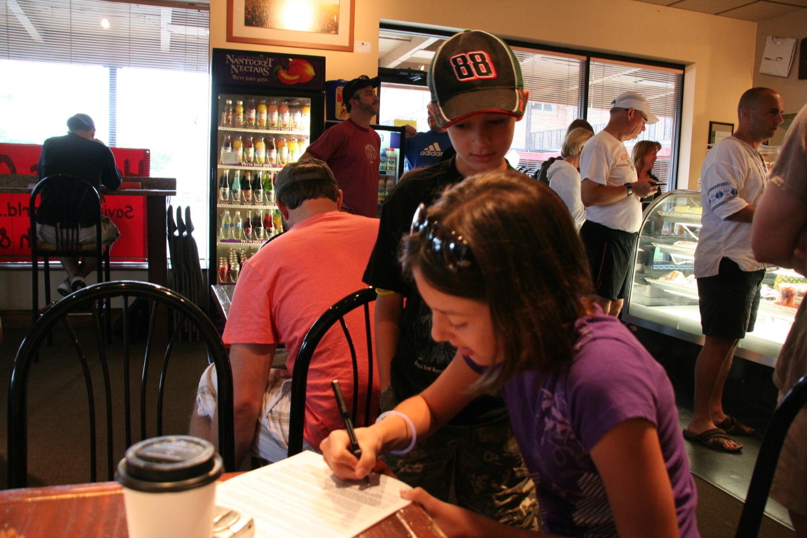

Out into
the ordinary.
We met at Homer’s, spent four hours taking pictures around Overland Park, then came back to see what everyone had found.

A good day to go looking.
We met at Homer’s Coffee House in Overland Park at 9 a.m. Four hours later, everyone came back with memory cards full of pictures.
Each person picked ten photos and a self portrait. The pictures went up without names, and contestants voted for their favorites. With no T-shirt or gift certificate that year, bragging rights had to do.
HOW THE 2009 VOTE WORKED ↗The pictures say it best.
The 2009 gallery originally ran in Flash. You can now browse the photographs each contestant chose for the vote.
After the cameras came home.
Over the next week, the photos went up, everyone voted, and the results came in.
Frame nine.
Ten votes.
Lauren Hunt.
Lauren’s photograph of a weathered car door won the day with ten votes. Dean’s photo also received ten, but he ran the contest and wasn’t eligible to win.
SEE THE FULL VOTE TALLY ↗BACK TO THE TOP ↑